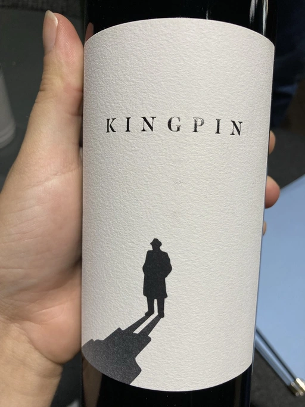

- Type
- Red Still, Dry
- Producer
- Félix Solís
- Vintage
- NV
- Location
- Spain, Vino de Mesa
- Grapes
- Tempranillo, Syrah, Cabernet Sauvignon
- Alcohol
- 14
- Sugar
- NA
- Price
- 285 UAH
- Cellar
- N/A
Ratings
2021-10-10 - 7.00
Smoked plum, black currant, hints of cured meat and strawberry. Full-forward palate, medium-plus body. Simple entry-level ‘blend is a new trend’ of Tempranillo, Shiraz and Cabernet Sauvignon from somewhere around Spain.